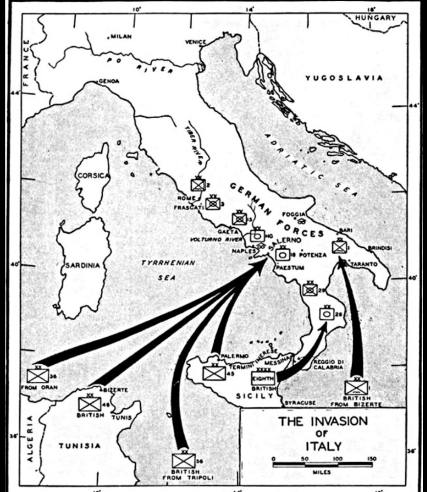

9 septembre 1943
Salerne, golfe de Naples, Italie
Alliés : États-Unis (5e Armée), Royaume-Uni
Axe : Allemagne nazie (10e Armée)
Opération Avalanche est le débarquement allié sur les côtes italiennes, destiné à ouvrir la voie vers Naples et à pousser l’Allemagne à défendre la péninsule après la capitulation de l’Italie. L’objectif est de sécuriser un port majeur pour soutenir la progression alliée.
Le 9 septembre 1943, les troupes américaines et britanniques débarquent à Salerne. Les Allemands opposent une résistance farouche, lançant contre-attaques blindées et bombardements continus. Les Alliés tiennent leurs positions grâce au soutien naval et aérien massif.
Victoire alliée. Naples est capturée peu après, permettant l’ouverture d’un axe logistique crucial pour la campagne d’Italie.
Avalanche marque le début de la libération de l’Italie. Elle force l’Allemagne à engager d’importantes forces dans la péninsule, ralentissant son effort sur d’autres fronts.